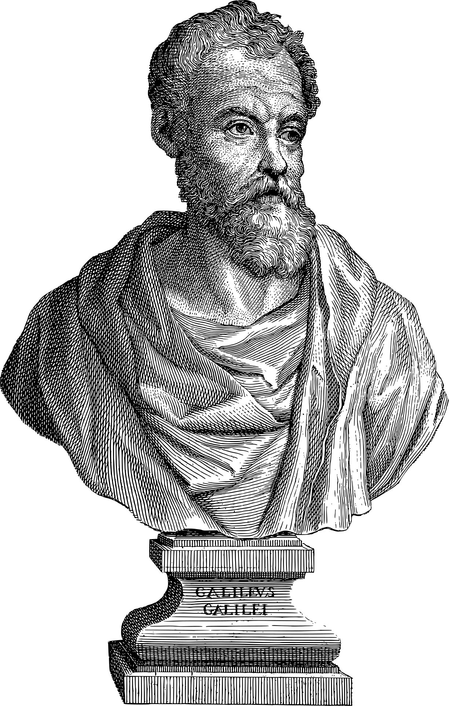
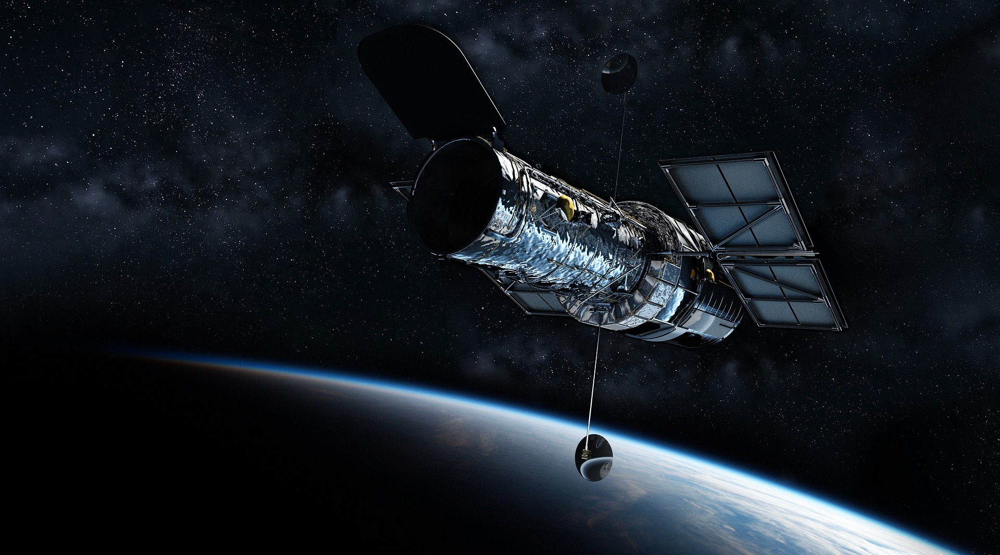
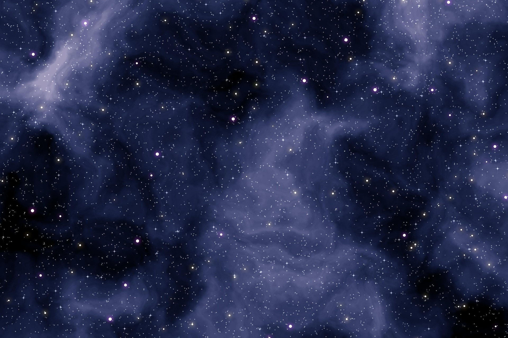
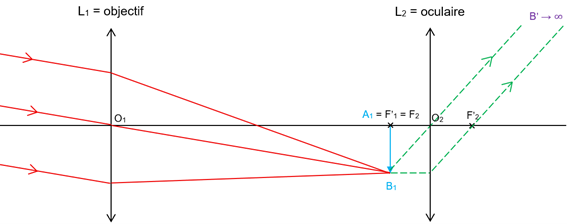
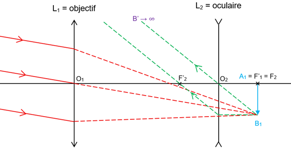
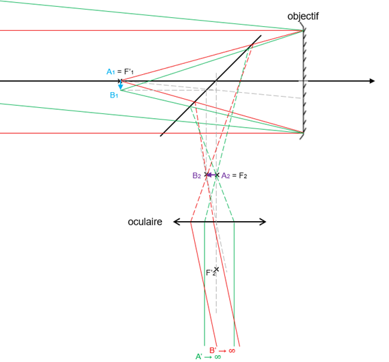

Fresque Chronologique
Retraçons les repères historiques qui ont marqué le développement des instruments optiques, depuis les premières lunettes jusqu'aux télescopes spatiaux de pointe, en mettant en évidence leurs optimisations successives.
La Lunette de Galilée (Repère Historique)

Galilée perfectionne l'instrument en associant un objectif convergent et un oculaire divergent. Il est le premier à l'utiliser scientifiquement pour l'observation astronomique.
La Lunette Astronomique (Kepler)

Johannes Kepler remplace l'oculaire divergent par une lentille convergente. Bien que l'image devienne renversée, il crée le premier système afocal réellement performant.
Le Télescope Réflecteur (Newton)
Isaac Newton invente le télescope en remplaçant la lentille primaire (objectif) par un miroir concave (système catoptrique).
L'ère Spatiale (Hubble)

L'humanité envoie un télescope en orbite terrestre basse (hors de notre atmosphère). Il fonctionne dans le spectre visible, ultraviolet et proche infrarouge.
Optique Adaptative & Miroirs Segmentés (JWST / ELT)

L'ère moderne utilise des miroirs hexagonaux assemblés en nid d'abeille (comme le James Webb) ou des miroirs déformables gérés par ordinateur en temps réel (pour les Extremely Large Telescopes terrestres).
Utilité et Fonctionnement
Lunette astronomique
La lunette astronomique augmente le diamètre et la luminosité apparente des objets situés à l’infini (étoiles, planètes). Constituée de deux lentilles convergentes : un objectif de grande distance focale (collecte) et un oculaire de courte focale (grossit).

Figure 1 : Foyer objet de l'oculaire confondu avec le foyer image de l'objectif.
- L'image se forme dans le plan focal image pour un objet à l'infini.
- L’image finale est rejetée à l’infini, observation sans fatigue.
- L’image étant renversée, on peut ajouter un redresseur (lunette terrestre).
Lunette de Galilée
Développée par Galileo Galilei, elle augmente le diamètre apparent des objets à l'infini tout en fournissant une image droite.

Figure 2 : Objectif convergent et oculaire divergent.
- Objectif convergent (image réelle) et oculaire divergent (image virtuelle).
- Le système est afocal.
- L'image est droite mais le champ de vision est plus limité.
Télescopes
Utilise un miroir sphérique concave comme objectif (système catoptrique).

Figure 3 : L'oculaire observe l'image après réflexion sur un miroir secondaire.
- Réglé pour être afocal : rejet de l'image à l'infini.
- Évite les aberrations chromatiques propres aux lentilles de verre.
- Permet de très grands diamètres : collecte plus de lumière, réduit la tache d'Airy.
Tableau Comparatif
| Instrument | Objectif | Oculaire | Image | Avantage |
|---|---|---|---|---|
| Lunette astronomique | Lentille convergente | Convergent | Renversée | Bon grossissement |
| Lunette de Galilée | Lentille convergente | Divergent | Droite | Instrument court |
| Télescope | Miroir concave | Convergent | Renversée | Grands diamètres |
Caractéristiques des instruments
Formules fondamentales
- Grandissement (γ) : Rapport de taille γ = A'B' / AB.
- Grossissement (G) : Rapport angulaire G = α' / α. Pour un système afocal (comme les lunettes astronomiques, de Galilée ou les télescopes), il vaut G = f1 / f2. Relation : G = 1 / γ.
- Puissance (P) : P = α' / AB.
Diaphragmes et Pupilles
- Diaphragme d’ouverture : Un diaphragme limite un faisceau lumineux. Le diaphragme d’ouverture est celui qui limite le plus la taille du faisceau utile. Pour une lunette ou un télescope, comme on cherche à capter le maximum de lumière, il est préférable que ce soit la première lentille (c’est-à-dire l’objectif) ou le premier miroir.
- Pupille d’entrée : Elle détermine le cône de lumière qui entre dans le système. Elle correspond au diaphragme d'ouverture lui-même ou à son conjugué dans l'espace objet. La pupille d’entrée détermine la quantité de lumière collectée et la luminosité de l’image. Plus le diamètre de l’objectif est grand, plus l’instrument capte de lumière et permet d’observer des objets faiblement lumineux ou très éloignés.
- Pupille de sortie : Elle détermine le cône de lumière qui sort du système. Elle est le conjugué du diaphragme d'ouverture par le reste du système. Pour les instruments étudiés, cela correspond au cercle oculaire situé après l'oculaire. La position de la pupille de sortie est importante car l’œil doit être placé à cet endroit pour voir toute l’image. On peut calculer le diamètre de la pupille de sortie avec : Ds = Do / G , avec Do le diamètre de l’objectif.
Latitude de mise au point
La latitude de mise au point est l'écart dans la position axiale pour que l'image virtuelle reste dans l'intervalle de netteté de l'œil, c'est-à-dire entre son Punctum Remotum (PR) et son Punctum Proximum (PP). L'observation la plus confortable (non fatigante) se fait sans accommoder, ce qui implique que l'image finale soit projetée à l'infini par un système afocal.
Profondeur de champ
Si on remplace l'œil par un appareil photographique ou un capteur, la netteté est définie par la largeur maximale acceptable de la tache image (environ la taille d'un pixel). La profondeur de champ est l'écart axial possible pour l'objet tout en gardant cette image nette. Elle est d'autant plus élevée que la distance focale est réduite, que l'objet est éloigné de l'instrument, ou que le diaphragme d'ouverture est petit (ce qui correspond à un nombre d'ouverture grand).
Exercice d'application
❖ Énoncé (Lunette astronomique)
La Lune est le satellite naturel de la Terre. Depuis le sol terrestre, on peut même deviner les cratères présents à sa surface. En effet, cet astre peut être vu sous un angle θ = 32'. Mais grâce à une lunette astronomique afocale possédant un objectif de 900 mm de distance focale et un oculaire de 10 mm de distance focale, le sol lunaire peut être observé en détails.
a. Convertir l'angle θ en radian.
b. Etablir l'expression du grossissement G de la lunette afocale en fonction des distances focales de l'objectif et de l'oculaire. Calculer sa valeur.
c. Calculer l'angle θ' sous lequel l'image de la Lune est vue à travers la lunette.
❖ Résolution
a. L'angle θ est égal à 32'. En sachant que 1° = 60', on déduit que θ = (32' × 1°) / 60' = 32° / 60.
On peut alors convertir les degrés en radian avec la correspondance : π radians correspondent à 180°. Soit :
θ = (32° / 60) × (π rad / 180°) = 8,3 × 10-3 rad.
b. Un schéma de la situation est réalisé :

Le grossissement G d'une lentille se définit par la relation : G = θ' / θ
Les angles étant petits, on peut faire les approximations tan(θ) ≈ θ et tan(θ') ≈ θ'.
On déduit du tracé : θ ≈ tan(θ) = A1B1 / f'1 et θ' ≈ tan(θ') = A1B1 / f'2
Soit : G = θ' / θ = (A1B1 / f'2) / (A1B1 / f'1) = f'1 / f'2 = 900 mm / 10 mm = 90.
c. L'angle θ' sous lequel l'image de la lune est vue à travers la lunette afocale est :
θ' = G × θ = 90 × 8,3 × 10-3 rad = 0,75 rad.